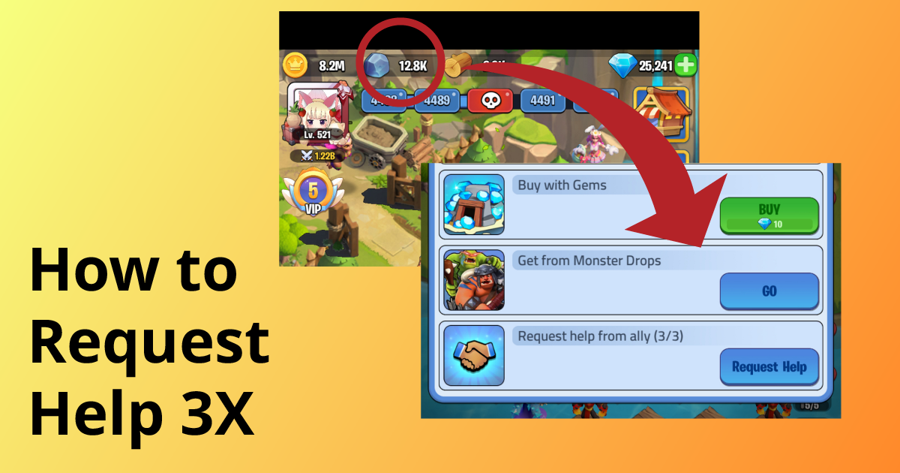

Tip #2 Requesting Help
You can request for gold and construction materials even if you are sitting on a stockpile of them.
To ask for help, tap the resource icon at top of the screen, then tap "Request Help".
Note: you can only do this if your Chat is in Window Mode.